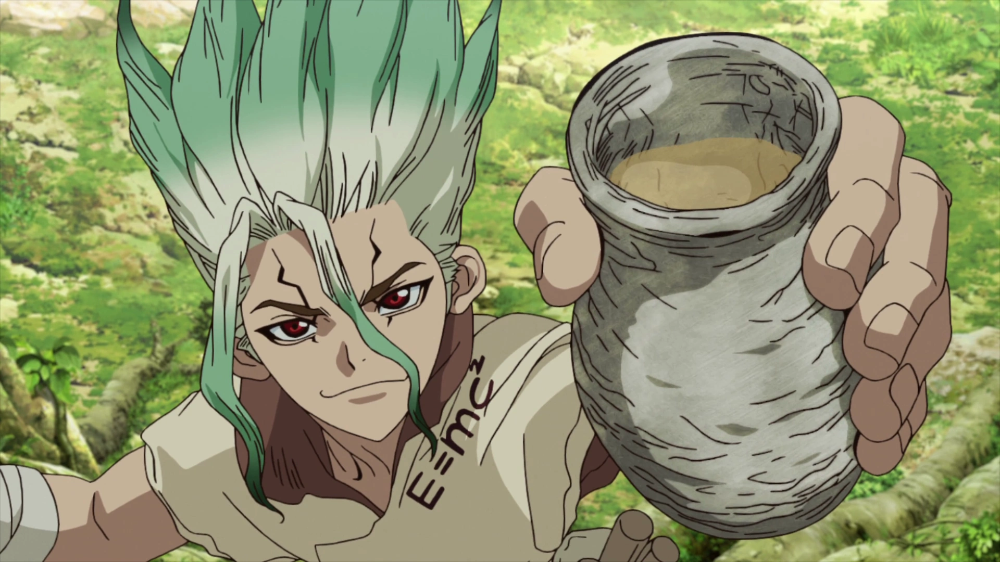
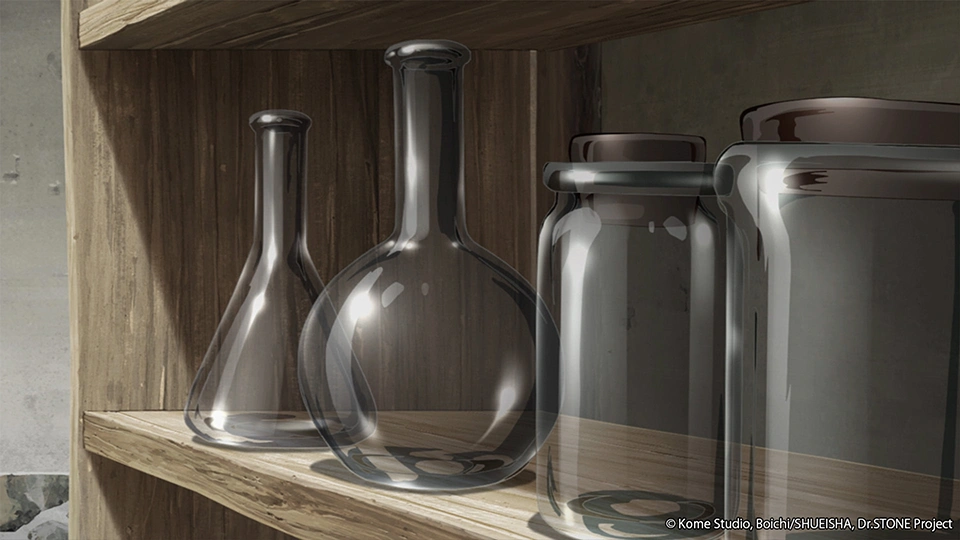
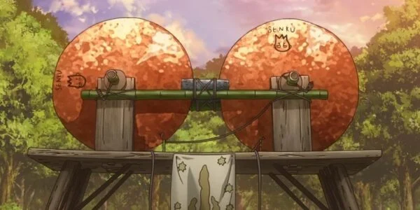

História do Reino da Ciência
Provavelmente você sabe que o Reino da Ciência, liderado por Senku Ishigami, é a principal força para reconstruir a civilização do zero. Mas talvez você não saiba como surgiram as primeiras invenções e a jornada por trás do renascimento da humanidade? Pois acompanhe este artigo para aprender muita coisa sobre essa incrível era da ciência.
A primeira versão
A primeira tentativa de trazer a humanidade de volta começou após 3.700 anos de petrificação. Senku despertou na Vila Ishigami e percebeu que precisava de uma fórmula para despetrificar as pessoas. Ele conta que passou um ano inteiro testando centenas de misturas de ácido nítrico com álcool até encontrar a proporção perfeita. O objetivo era criar o "Fluido do Renascimento" para salvar a civilização do estado de pedra.

Essa primeira mistura experimental quase falhou, mas resultou na fórmula Nital que conhecemos hoje.
Surge um novo elemento
A ideia de acelerar a reconstrução da humanidade foi amadurecendo e a missão exigia materiais cada vez mais complexos. O jovem artesão Kaseki e o "feiticeiro" Chrome ficaram com a missão de construir o primeiro laboratório de vidro para manipular compostos químicos com precisão.

A ideia principal de Senku era avançar 2.000 anos de história humana em poucos passos científicos estratégicos. O projeto também deveria gerar recursos úteis e armas de defesa rápida contra o Império de Tsukasa. Surgiram então os primeiros itens da civilização moderna.

A principal inspiração para a criação do primeiro gerador elétrico veio da necessidade de conseguir luz antes do inverno chegar. Conta a história que Senku usou cobre, garrafas de vidro e relâmpagos em uma tempestade para acender a primeira lâmpada de bambu, e o impacto foi imediato: a ciência havia oficialmente renascido.
Como fazer Senku Cola
Ingredientes:
- 1 garrafa de água com gás
- 4 a 5 colheres de sopa de mel
- Raspas de 1 a 2 limões (sem a parte branca para não amargar)
- Suco de 1 limão
- 1 punhado de folhas/talos de coentro